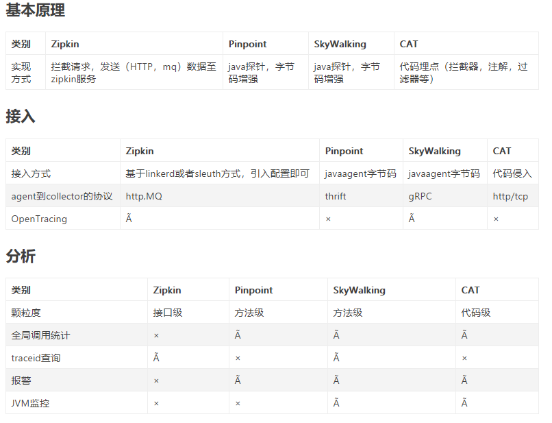
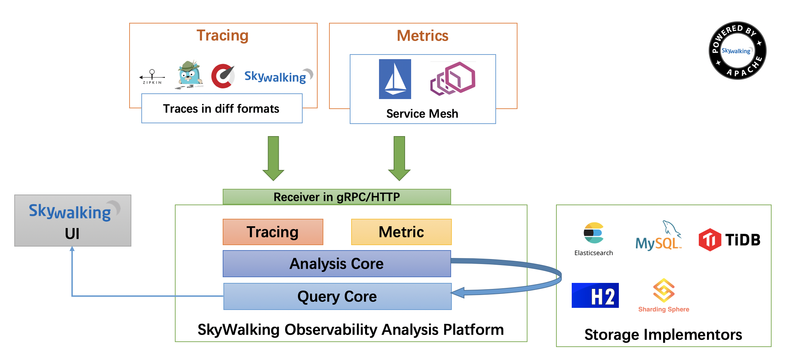
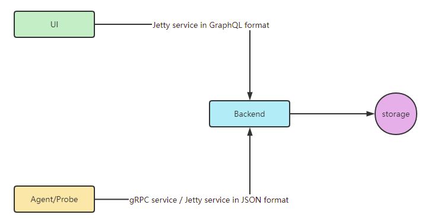
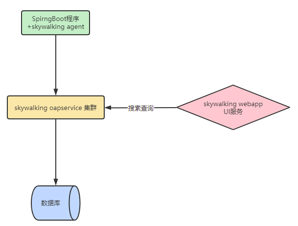

SkyWalking是什么
对于一个大型的几十个、几百个微服务构成的微服务架构系统，通常会遇到下面一些问题，比如：
- 如何串联整个调用链路，快速定位问题？
- 如何理清各个微服务之间的依赖关系？
- 如何进行各个微服务接口的性能分折？
- 如何跟踪整个业务流程的调用处理顺序？
skywalking是分布式系统的应用程序性能监视工具，专为微服务、云原生架构和基于容器（Docker、K8s、Mesos）架构而设计。SkyWalking 是观察性分析平台和应用性能管理系统，提供分布式追踪、服务网格遥测分析、度量聚合和可视化一体化解决方案。
1 | - 官网：http://skywalking.apache.org/ |
调用链选型
- Zipkin是Twitter开源的调用链分析工具，目前基于springcloud sleuth得到了广泛的使用，特点是轻量，使用部署简单。
- Pinpoint是韩国人开源的基于字节码注入的调用链分析，以及应用监控分析工具。特点是支持多种插件，UI功能强大，接入端无代码侵入。
- SkyWalking是本土开源的基于字节码注入的调用链分析，以及应用监控分析工具。特点是支持多种插件，UI功能较强，接入端无代码侵入。目前已加入Apache孵化器。
- CAT是大众点评开源的基于编码和配置的调用链分析，应用监控分析，日志采集，监控报警等一系列的监控平台工具。

探针性能对比
模拟了三种并发用户：500，750，1000。使用jmeter测试，每个线程发送30个请求，设置思考时间为10ms。使用的采样率为1，即100%，这边与生产可能有差别。pinpoint默认的采样率为20，即50%，通过设置agent的配置文件改为100%。zipkin默认也是1。组合起来，一共有12种。下面看下汇总表：
skywalking的探针对吞吐量的影响最小，zipkin的吞吐量居中。pinpoint的探针对吞吐量的影响较为明显，在500并发用户时，测试服务的吞吐量从1385降低到774，影响很大。然后再看下CPU和memory的影响，在内部服务器进行的压测，对CPU和memory的影响都差不多在10%之内。
Skywalking主要功能特性
- 1、多种监控手段，可以通过语言探针和service mesh获得监控的数据；
- 2、支持多种语言自动探针，包括 Java，.NET Core 和 Node.JS；
- 3、轻量高效，无需大数据平台和大量的服务器资源；
- 4、模块化，UI、存储、集群管理都有多种机制可选；
- 5、支持告警；
- 6、优秀的可视化解决方案；
Skywalking整体架构

四部分：
- 1、上部分Agent ：负责从应用中，收集链路信息，发送给 SkyWalking OAP 服务器；
- 2、下部分 SkyWalking OAP ：负责接收Agent发送的Tracing数据信息，然后进行分析(Analysis Core)，存储到外部存储器(Storage)，最终提供查询(Query)功能；
- 3、右部分Storage：Tracing数据存储，目前支持ES、MySQL、Sharding Sphere、TiDB、H2多种存储器，目前采用较多的是ES，主要考虑是SkyWalking开发团队自己的生产环境采用ES为主；
- 4、左部分SkyWalking UI：负责提供控制台，查看链路等等；
支持三种探针：
- Agent – 基于ByteBuddy字节码增强技术实现，通过jvm的agent参数加载，并在程序启动时拦截指定的方法来收集数据。
- SDK – 程序中显式调用SkyWalking提供的SDK来收集数据，对应用有侵入。
- Service Mesh – 通过Service mesh的网络代理来收集数据。
后端（Backend）
接受探针发送过来的数据，进行度量分析，调用链分析和存储。后端主要分为两部分：
- OAP（Observability Analysis Platform）- 进行度量分析和调用链分析的后端平台，并支持将数据存储到各种数据库中，如：ElasticSearch，MySQL，InfluxDB等。
- OAL（Observability Analysis Language）- 用来进行度量分析的DSL，类似于SQL，用于查询度量分析结果和警报。
界面(UI)
- RocketBot UI – SkyWalking 7.0.0 的默认web UI
- CLI – 命令行界面
三个模块的交互流程

SkyWalking环境搭建部署图示


...
...
00:00
00:00
Copyright 2021 sunfy.top ALL Rights Reserved